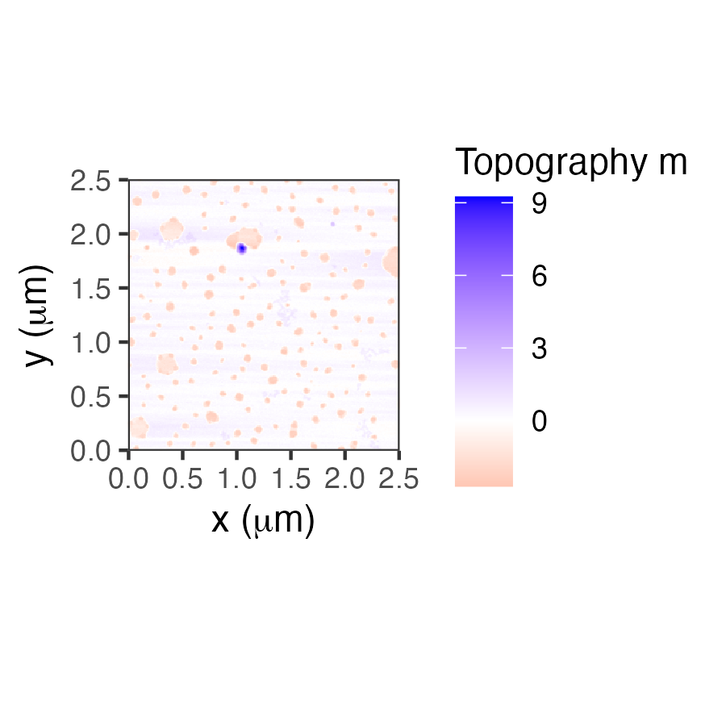

Changelog
nanoscopeAFM 2.0.3
- allow AFMinfo.item() to return all names
- update vignette with information:
- rcmdcheck() package and add libraries
- update changelog
nanoscopeAFM 2.0.0
- remove old dependencies
- add new types for AFM plotting, adding graphType = c(1,2)
nanoscopeAFM 1.1.0
- first release, use to have backwards-compatibility
- change data format of @data in AFMdata structure from data.frame to list to accommodate multiple images
- new reader for AR images
- eliminate z-conversion, since we are saving the units for the z values, just store the converted values
- complete AFMinfo documentation for all 4 instruments
nanoscopeAFM 1.0.5
- replace x.max.nm with x.conv, and y.conv similar to z.conv; scaling parameters to change units to nm
- add sample description possibility
nanoscopeAFM 1.0.3
- some minor fixes to make AFM.raster() work
- add AFM.lineProfile() function (not rendering though yet)
- Github IO Help Page
nanoscopeAFM 1.0.1
- fix channels for AFM import
- include only data$z, generate the others using AFM.raster()
nanoscopeAFM 1.0
- create S4 class AFMdata
- create print method to display image
- create AFM.import function to generate class AFMdata
nanoscopeAFM 0.6.6
- update test files:
- system.file(“extdata”,“Park_20210916_034.tiff”,package=“nanoscopeAFM”)
- system.file(“extdata”,“AR_20211011.ibw”,package=“nanoscopeAFM”)
- system.file(“extdata”,“Veeco_20160622.003”,package=“nanoscopeAFM”)
- system.file(“extdata”,“NanoSurf_20160301.nid”,package=“nanoscopeAFM”)
nanoscopeAFM 0.6.3
- add notes/comments to INFO
- open MFM images from Igor with Nap files
- using field descriptions: https://github.com/wking/igor/blob/master/igor/binarywave.py
nanoscopeAFM 0.6.1
- Major update, rename most functions (see README for deprecated functions)
- Add support for Park AFM images in TIFF format
- add images for Veeco, Nanosurf, Park, and Asylum Research
- expand testing (testthat)
nanoscopeAFM 0.6.0
- support pgkdown, use > pkgdown::build_site() to build the site and export to thomasgredig.github.io